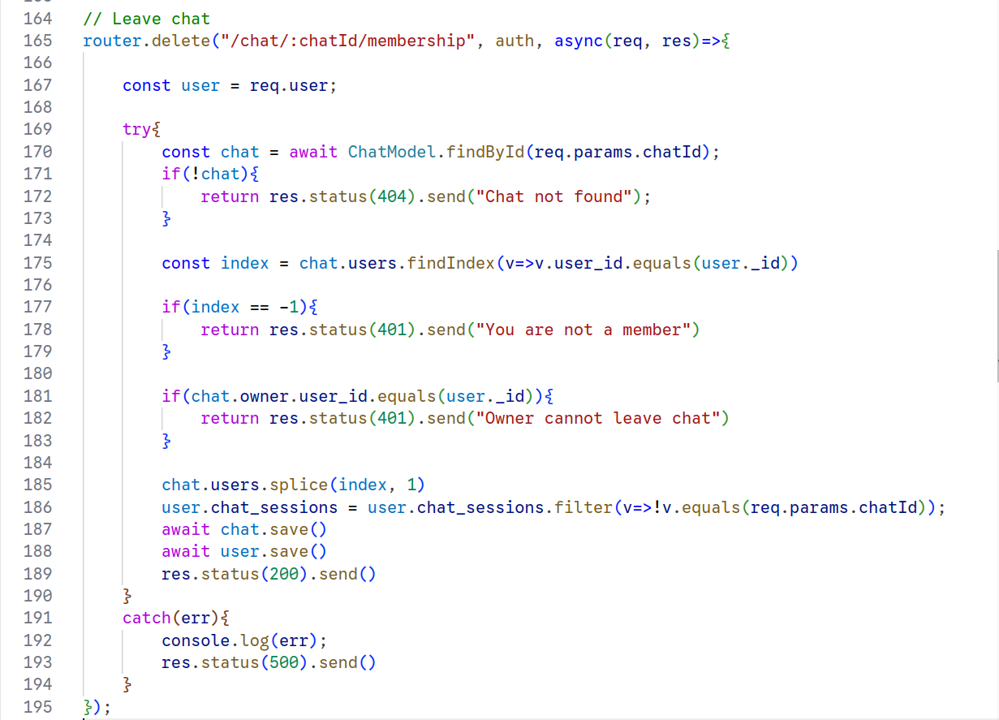
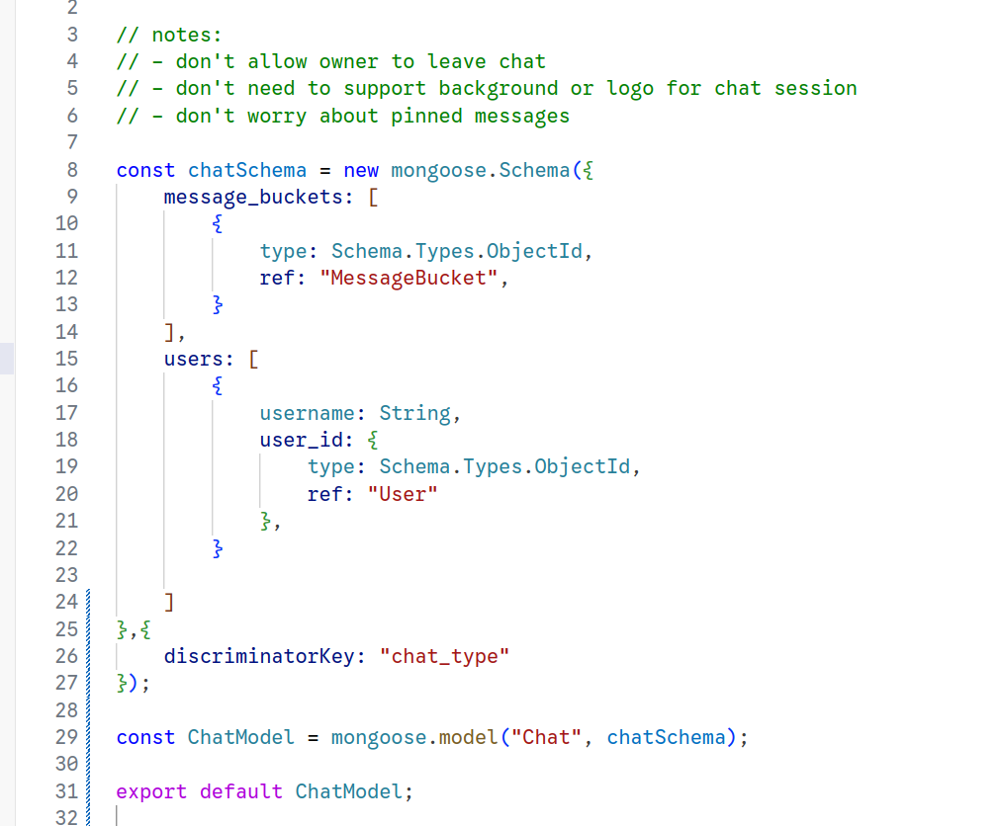
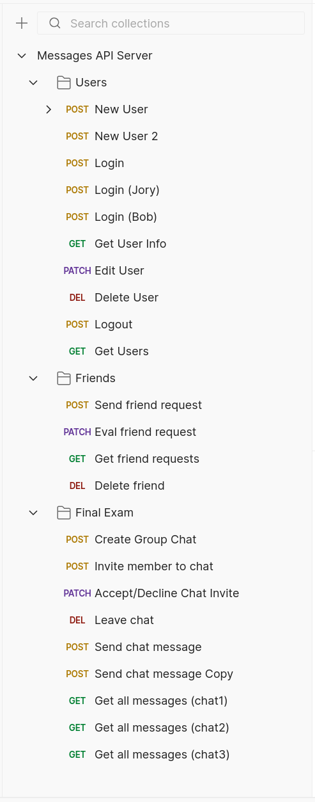
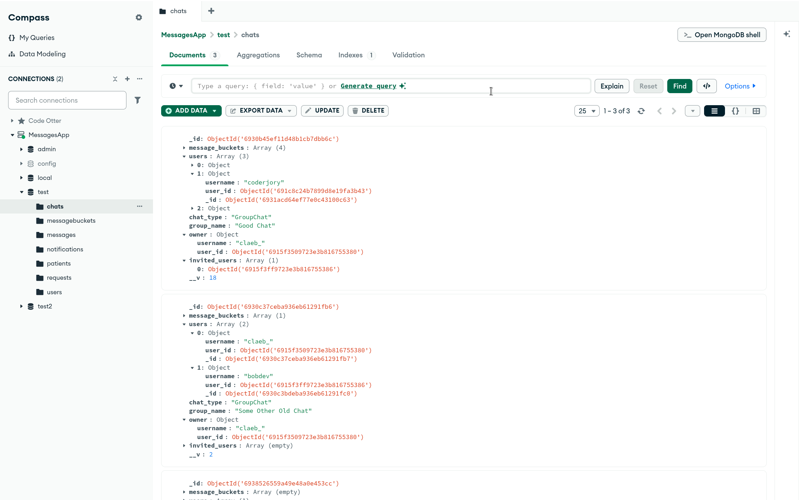
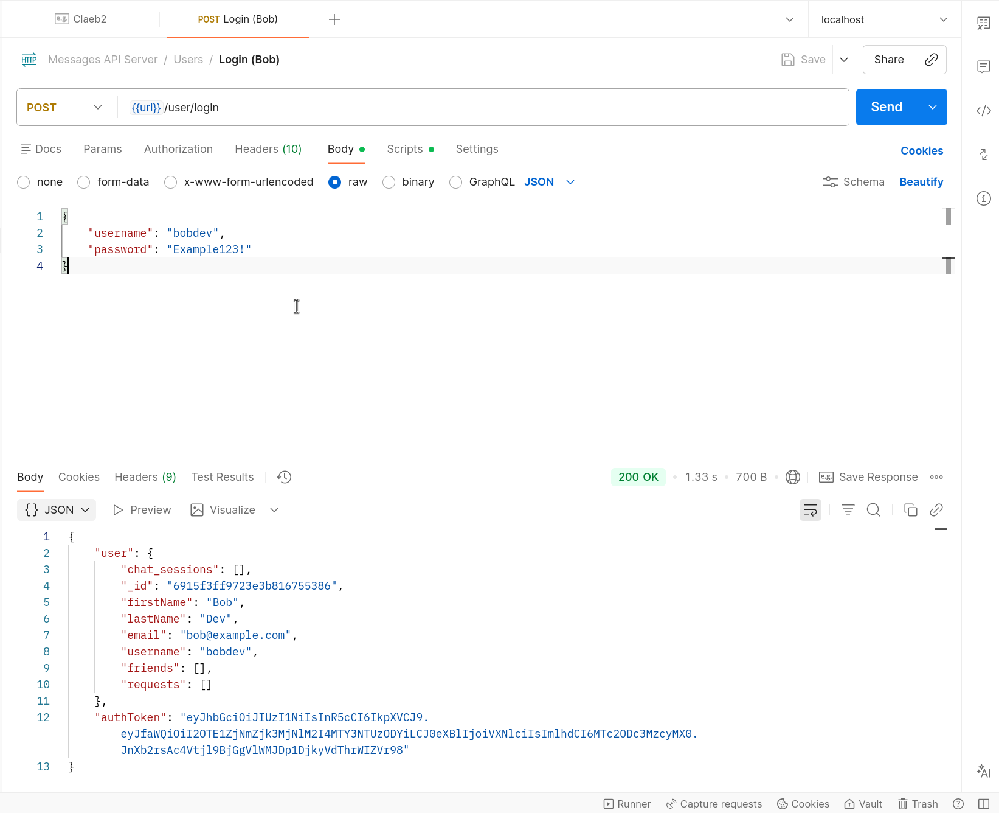
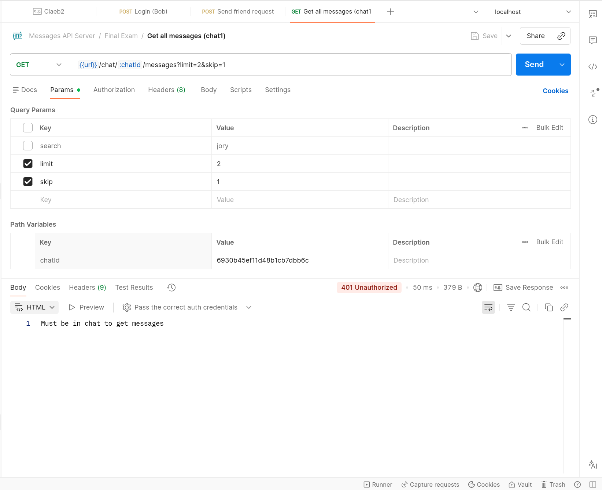

Artifact: Server-Side Web Dev Final Project






Paired coding project completed with a struggling classmate, requiring ethical decision-making and mentorship. This artifact reflects fairness, patience, and professional responsibility in collaborative work.